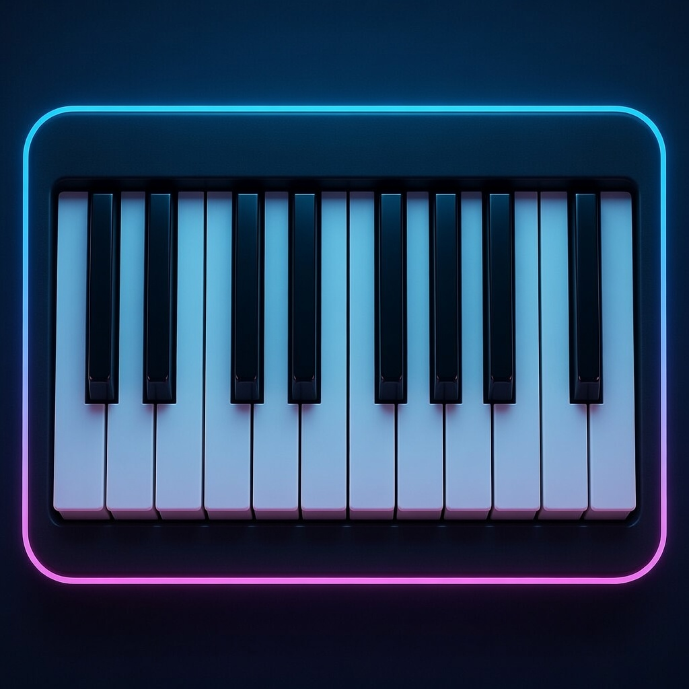
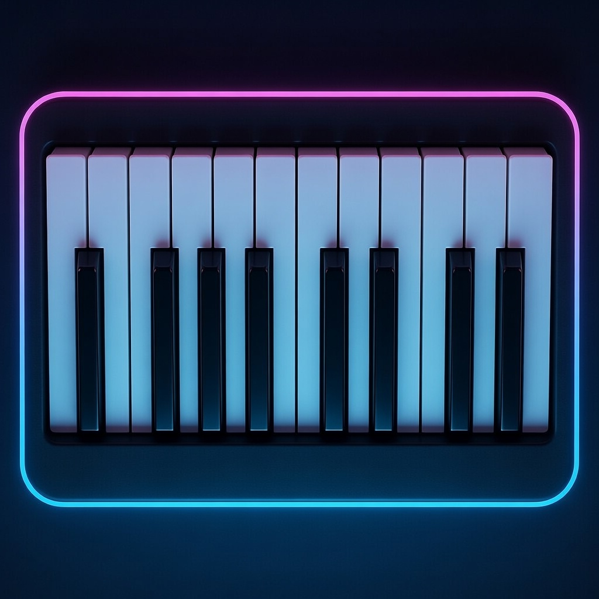

La musique est un don précieux de Dieu : elle élève l'âme, unit les cœurs et nous rapproche
du Créateur. Ce site a été pour acompagner les élève, les professeurs et tous les amateurs
de musique dans un beau voyage sonore.
Harmonie Divine veut :
Soutenir les professeurs de musique du collège dans leur mission quotidienne d'enseignement.
Transmettre aux élèves le goût, la beauté et la profondeur de la musique.
Offrir des outils concrets, ludiques et accessibles pour apprendre la voix, le piano et la violon.
Relier l'art musical à la foi
Permettre à chacun de pratiquer chez Harmonie Divine grâce à des enseignements, des conseils et un piano virtuel pour débuter gratuitement.
La navigation est pensée pour être intuitive et rapide :
Introduction → pour comprendre le projet et les objectifs.
Professeurs → des idées pratiques, des conseils pour animer vos cours et personnaliser les modules.
Élèves → quatre sections claires par niveau : 6 ème,5ème, 4ème et 3ème.
Chaque niveau contient 5 modules progressifs avec explications, exercices et exemple audio/vidéo.
Bonus - L'Histoire de la Musique → un parcours spirituel à travers les siècles.
Piano → un clavier virtuel à 36 touches pour pratiquer immédiatement (clic).
Le but de site est de supporter les professeurs de musique dans leur tâche quotidienne, c'est à dire
de faire apprendre aux élèves, l'art de la musique, l'importance de la musique et le gout de la musique.
Il est important de soutenir nos professeurs et de leur donner tout les outils necessaires en main pour
réussir a transmettre le savoir faire de l'humanité en terme d'art musical.
Ce site a été imaginé et créé pour faciliter de manière logique et simple, l'apprentissage des élèves
il y a 4 sections d'apprentissages, chaque section est pour chaque niveau de classe, 6ème, 5ème, 4ème
et 3ème. Plus la classe monte et plus l'"expertise" de l'art musical sera prononcé tout en s'adaptant
au niveau des élèves.
Ensuite il y a une section Piano, ou vous pouvez jouer du piano avec votre clavier.
Les touches sont pensées comme un piano et la section piano vous guidera pour les touches.
Ce site s'adresse à tout les amateurs de musique, professeurs, élèves, toute personne voulant apprendre
de la musique.
Paramètres pour vos programmes
1. Niveau adapté :
Utilisez les sections par classe (6ème à 3ème) comme base ;
commencez par évaluer le niveau des élèves avec les exercices
simples du module 1 pour ajuster la difficulté.
2.Intégration des outils :
Liez les modules au piano virtuel du site pour des pratiques immédiates ;
par exemple, assignez des exercices sur les touches blanches
pour renforcer les leçons sur le timbre.
3.Durée et rythme :
Structurez chaque module sur 6-8 semaines ;
utilisez les iframes audio comme starters de séance pour une écoute active,
et enregistrez les progrès des élèves via des outils comme Google Drive.
4.Thèmes catholiques :
Intégrez l'histoire de la musique (bonus) pour des liens spirituels ;
par exemple, reliez le chant grégorien aux modules voix pour des leçons sur la prière chantée.
5.Évaluation :
Ajoutez des quizzes, faites mesurer l'intonation de la voix pour savoir si elle est valide au son demandé
N'oublions pas, nous avons pas tous la même voix, ne soyez pas trop dure, le principal c'est de mettre la volonté
Plusieurs solutions
1.Présentation interactive :
Commencez par une démo en classe :
montrez la navigation (Introduction > Niveaux > Piano) via un projecteur,
et laissez les élèves cliquer sur un module pour tester un audio.
2.Intégration au programme scolaire :
Partagez le lien du site via l'ENT (Espace Numérique de Travail) ou un QR code ;
expliquez comment il complète les manuels officiels (cycle 3-4) avec un focus.
3.Session parents-professeurs :
Organisez une réunion où vous naviguez le site ensemble ;
mettez en avant les modules par niveau et le piano comme outil maison pour pratiquer sans instrument.
4.Thématisation :
Présentez-le comme un "voyage musical divin".
Utilisez les images futuristes pour attirer les jeunes, et ajoutez une intro vidéo maison sur YouTube.
5.Feedback initial :
Demandez aux élèves de noter leur module préféré après une première visite ;
utilisez cela pour personnaliser la présentation future, en insistant sur l'aspect ludique (ex. battles rythmiques).
1.Ajouts locaux :
Créez des extensions via des docs Google partagés ;
par exemple, ajoutez vos propres audios (chants locaux ou enregistrements de classe) liés aux iframes existantes.
2.Thèmes personnalisés :
Reliez les modules à des événements scolaires (ex. Noël pour des mélodies folkloriques) ;
intégrez des prières chantées catholiques pour une touche spirituelle unique.
3.Groupes collaboratifs :
Formez des "équipes modules" où les élèves modifient légèrement un exercice (ex. changer les paroles d'un chant) ;
partagez les résultats en classe pour co-créer du contenu.
4.Outils externes :
Complétez avec des apps comme GarageBand pour enregistrer des versions personnelles des modules ;
utilisez le piano virtuel comme base pour des défis improvisés adaptés à votre classe.
5.Évaluation créative :
Transformez les "commentaires..." vides en forums (via Padlet) où vous ajoutez vos insights personnels ; encouragez les élèves à contribuer, rendant le site un outil vivant et collaboratif.
1 : À la Découverte des Sons Magiques
Dans ce premier module, on explore le monde des timbres et des sons avec émerveillement, comme
des explorateurs dans une forêt enchantée. On commence par des méthodes d’écoute active et de
jeux d’imitation (inspirées de Kodály) pour reconnaître les hauteurs et les nuances.
Pour la voix :
Leçons de posture et respiration ventrale avec des exercices rigolos comme « le lion qui rugit » ou « le serpent
qui siffle », suivis de chants simples en canon comme Frère Jacques.
Au piano :
Découverte du clavier repérage du do central et premiers exercices de doigts avec des « courses de notes » (monter et
descendre en jouant des sons d’animaux).
Au violon :
Apprentissage de la tenue de l’instrument et de l’archet comme une baguette magique
Avec des exercices sur les cordes à vide (sol, ré, la, mi) en
imitant des bruits de voiture ou de vent. Chaque séance se termine par un petit concert collectif où tout
le monde partage ses découvertes !
Commentaire...
2 : Le Rythme qui Fait Danser
On passe à l’énergie pure avec le rythme et le tempo, en transformant la classe en piste de danse !
Les méthodes reposent sur le mouvement corporel et les percussions corporelles (approche Orff) pour
sentir les pulsations.
Pour la voix :
Leçons de chants rythmés avec claps et stomps, exercices comme
taper le rythme de We Will Rock You en chantant les paroles simplifiées.
Au piano :
Apprentissage des valeurs de notes (noire, croche) via des jeux de « copier le professeur »
sur des mélodies simples comme Twinkle Twinkle Little Star en rythme.
Au violon :
Exercices de détaché avec l’archet sur cordes
à vide, en suivant des battements de tambourin ou des musiques du monde ; on joue des rythmes en
groupe comme une mini-orchestre. Les exercices amusants incluent des défis « qui suit le mieux le
métronome humain » et des improvisations rythmiques en cercle !
Commentaire...
3 : Les Mélodies qui Racontent des Histoires
Ici, on devient des conteurs musicaux : les mélodies servent à raconter des aventures ! On utilise la
méthode solfège avec gestes de la main (Kodály) pour visualiser les intervalles.
Pour la voix :
Echauffements vocaux avec des gammes pentatoniques chantées comme des comptines, puis
apprentissage de mélodies simples comme Au clair de la lune ou des chansons folkloriques.
Au piano :
Leçons de lecture de notes en clé de sol (main droite), exercices de jouer des mélodies courtes avec
accompagnement de notes tenues.
Au violon :
Placement des doigts sur la corde la pour les premières
notes (si, do, ré), en jouant des airs connus comme Petit Papa Noël version simplifiée. Les exercices
incluent des « histoires musicales » où chaque élève ajoute une phrase mélodique, et on enregistre nos
créations pour les réécouter en rigolant !
Commentaire...
4 : L'Harmonie et les Accords Enchantés
On découvre la magie des sons qui s’assemblent pour créer de la profondeur, comme des couleurs qui
se mélangent. Les méthodes mêlent écoute comparée et expérimentation collective.
Pour la voix :
Leçons de chants en deux voix (polyphonie simple) avec des rounds comme Row Row Row Your Boat, en
travaillant l’intonation et l’écoute des autres.
Au piano :
Introduction aux accords de base (do majeur,
sol majeur) avec la main gauche, exercices pour accompagner des mélodies jouées par les camarades.
Au violon :
Travail sur les doubles cordes simples ou l’accompagnement rythmique en pizzicato, en
jouant des bourdons harmoniques. Les exercices ludiques consistent à créer des « bandes-son » pour
des petites saynètes ou à transformer une chanson connue en version harmonisée en groupe – c’est
toujours un moment de fou rire garanti !
Commentaire...
5 : Créer, Jouer et Partager la Musique
Pour clore l’année en beauté, on devient de vrais compositeurs et interprètes ! Ce module met l’accent
sur la création et la performance, avec des projets de groupe.
Pour la voix :
Composition de petites chansons originales sur des thèmes choisis par les élèves,
avec exercices d’improvisation vocale.
Au piano :
création de courtes pièces à deux mains simples,
en utilisant les notes et rythmes appris.
Au violon :
composition de mélodies courtes sur 2-3 notes, puis interprétation en petit ensemble.
Les méthodes incluent l’enregistrement et l’auto-évaluation bienveillante. Le point culminant est un mini-
concert de fin d’année où chaque groupe présente son œuvre – costumes, lumières et
applaudissements inclus ! On termine par une grande ronde de remerciements musicaux.
1 : Les Super-Pouvoirs du Son et du Timbre
On devient des ninjas du son ! On affine l’écoute fine : repérer les familles d’instruments, les attaques,
les modes de jeu (pizzicato, arco, legato, staccato).
Pour la voix :
échauffements plus précis (sirènes glissando, résonateurs avec « ng », « vroum »),
leçons sur le registre de poitrine/tête et premiers
exercices de mix voix pour passer d’un registre à l’autre sans craquer.
Au piano :
travail des dynamiques(pp à ff) et pédale de sustain sur des motifs simples ; exercices de « couleurs sonores » en jouant la
même mélodie avec différents touchers (légato vs martelé).
Au violon :
contrôle de l’archet (pression, vitesse, point d’attaque), leçons sur les positions 1 et début de la 3e sur corde la ; jeux d’imitation de
timbres (vent, pluie, oiseaux) sur cordes à vide + doigts. On termine chaque séance par un blind test «
devine l’instrument ou le mode de jeu » en groupe – le gagnant choisit la prochaine musique d’entrée en classe !
2 : Rythmes qui Groovent et Syncopés
On passe en mode groove ! On explore les rythmes binaires/ternaires, les syncopes légères et les
contretemps. Méthodes : body percussion + percussions Orff pour sentir les subdivisions.
Pour la voix :
chants avec off-beat (style reggae simplifié ou gospel), exercices de canons rythmiques à 2 ou 3 voix
(ex. « Kpanlogo » africain adapté).
Au piano :
lecture rythmique plus fine (croches pointées, triolets
simples), accompagnements main gauche en walking bass sur do majeur/sol majeur ; défis « rythme
contre mélodie » où une moitié joue le groove et l’autre la mélodie.
Au violon : rythmes syncopés au
détaché et au spiccato léger, exercices sur cordes à vide + 1re position ; on crée des ostinatos
rythmiques en petit groupe pour accompagner un chant. Le clou du spectacle : battle de rythmes
corporels + instruments → le public vote pour le groove le plus addictif !
3 : Mélodies qui Voyagent dans le Temps
On part en voyage musical à travers les époques ! On compare monodie/polyphonie, on découvre des
motifs qui reviennent (ostinato, rondo).
Pour la voix :
travail d’intonation plus juste sur intervalles de
4e/5e, chants médiévaux simplifiés (type grégorien ou rondeau) puis polyphonie à 2 voix (ex. canons de
plus en plus longs comme « Dona nobis pacem »).
Au piano :
lecture en clé de fa main gauche + clé de
sol main droite, mélodies avec ornements simples (gruppetto, trille courte) ; exercices d’improvisation
sur pentatonique ou gamme majeure.
Au violon :
positions 1 à 3, vibrato de base (oscillation lente),
mélodies expressives sur 2 octaves ; on joue des airs traditionnels variés (Irlande, Balkans, France
médiévale). Projet fun : chaque binôme invente une « mélodie du futur » en réinventant un air ancien –
on vote pour la plus stylée !
4 : L’Harmonie qui Donne des Frissons
On assemble les sons pour faire vibrer les émotions ! Introduction aux fonctions tonales simples
(tonique, dominante, sous-dominante), accords parfaits majeurs/mineurs.
Pour la voix :
rounds à 3 voix, premiers duos harmoniques (tierces et quintes parallèles), leçons sur l’équilibre des voix dans un chœur.
Au piano : accords brisés et bloqués, basse d’Alberti simplifiée, accompagnement de mélodies
chantées ; exercices « transforme majeur en mineur » pour changer l’ambiance d’une chanson connue.
Au violon :
doubles cordes en tierce/quinte (ouvertes puis doigts), pizzicato harmonique pour
accompagner ; on crée des fonds harmoniques pour soutenir une mélodie collective. Challenge hilarant
: « remix émotionnel » – on prend une même mélodie et on la joue joyeuse, triste, mystérieuse, énervée…
en changeant juste l’harmonie et le tempo !
5 : Tes Projets, Ta Musique, Ton Concert
C’est l’heure de briller en créateurs ! On monte des projets d’interprétation ou de composition en petits
groupes.
Pour la voix :
écriture de paroles + mélodie sur un thème (écologie, amitié, super-héros…),
travail de mise en scène vocale.
Au piano :
compositions courtes (8-16 mesures) avec ABA ou rondo,
ajout d’une intro et coda simple.
Au violon :
mini-pièces expressives avec nuances et articulation
variées, possibilité d’ajouter un effet spécial (col legno, sul ponticello light). Méthodes : brainstorming
collectif, enregistrement smartphone pour s’auto-corriger gentiment, répétitions en « mode studio ».
Grand final : concert « 5èmes en scène » avec lumières, décor fait maison et même un petit fil rouge
(ex. « voyage musical autour du monde »). On finit par une jam session géante où tout le monde joue
ensemble – pur bonheur !
1 : Sons, Espaces et Effets Sonores Avancés
On devient des architectes du son ! On affine l’analyse des timbres, des espaces acoustiques (réverb,
écho, proximité/lointain) et des effets (distorsion, wah-wah, delay light).
Pour la voix :
travail sur le placement (masque, résonance), mix voix plus fluide, exercices de nuances extrêmes (ppp → fff) et
premiers effets vocaux (beatbox basique, overtones).
Au piano :
exploration des pédales (sustain, una corda, sostenuto), toucher varié pour créer des climats ;
exercices sur des motifs avec effets de résonance et dynamiques en crescendo/diminuendo longs.
Au violon :
maîtrise du vibrato (large/lent → étroit/rapide),
sul ponticello / sul tasto pour changer le timbre, contrôle des nuances sur archets longs ;
jeux d’imitation d’effets sonores modernes (drones, bruits urbains). Projet fun : création d’un « paysage
sonore » collectif enregistré avec téléphone – on écoute et on débat : « quel effet rend le plus l’ambiance ? »
2 : Rythmes Complexes et Grooves Collectifs
On passe au niveau supérieur du groove ! On aborde les mesures composées (6/8, 9/8), les polymétries
simples, les contretemps marqués et les swing. Méthodes : body band + percus pour internaliser les
subdivisions. Pour la voix : chants gospel ou afrobeat avec syncopes et off-beats, polyrythmies vocales
à 2-3 couches (ex. un groupe en 4/4, l’autre en 3/4 léger).
Au piano : accompagnements en patterns syncopés, main gauche en walking bass ou en rumba, exercices de lecture rythmique avec triolets et noires pointées-croches.
Au violon : spiccato et sautillé maîtrisé, rythmes irréguliers sur cordes à vide +
positions 1-3 ; on crée des ostinatos polymétriques en petit ensemble. Challenge explosif : « battle de
grooves » où chaque groupe propose un rythme du monde (salsa, gnawa, funk…) et on vote pour le plus
dansant – avec instruments et voix mixés !
3 : Formes Musicales et Narration
On devient des réalisateurs de films sonores ! On étudie les formes (rondo, thème et variations, ABA
étendue, fugue simple) et comment elles racontent une histoire.
Pour la voix :
polyphonie à 3 voix (canons développés, homophonie + contre-chant), travail sur l’expression et le phrasé dans
des pièces baroques ou romantiques simplifiées.
Au piano :
lecture mains croisées légère, ornements (appoggiature, mordant), variations sur un thème donné ;
improvisation guidée sur forme ABA.
Au violon :
positions 1 à 4, shifts simples, expression via vibrato et rubato ; interprétation d’airs avec
caractère narratif (ex. thème joyeux → sombre → retour joyeux). Projet créatif : chaque binôme compose
une mini-pièce en forme rondo sur un thème imposé (« une journée folle ») – on présente et on
argumente : « comment la forme aide à raconter l’histoire ? »
4 : Harmonie Fonctionnelle et Émotions
On décrypte ce qui fait vibrer le cœur ! Approfondissement des degrés (I, IV, V, vi), modulations simples
(ton voisin), accords de 7e basiques.
Pour la voix :
chants à 3-4 voix avec tierces/ quintes/ octaves,
travail sur l’intonation juste en harmonie, équilibrage des pupitres.
Au piano :
réalisation d’accompagnement chiffré simple, basse continue light, arpèges et accords plaqués pour soutenir une
mélodie ; exercices « change l’harmonie, change l’émotion » (majeur → mineur → modal).
Au violon :
doubles cordes en 3e/6e, accords brisés, rôle d’harmonie en pizz ou arco soutenu. Défi émouvant : «
transforme une chanson pop connue » en version acoustique harmonisée différemment (joyeuse,
mélancolique, épique…) – on écoute les versions et on débat des choix harmoniques !
5 : Création Originale et Performance Pro
L’année se termine en apothéose : vous êtes les artistes ! Focus sur des projets longs
d’interprétation/création personnelle ou collective.
Pour la voix :
composition de chansons complètes
(paroles + musique), arrangement vocal à plusieurs voix, mise en scène.
Au piano :
pièces de 16-32 mesures avec intro, développement, coda, utilisation des formes vues.
Au violon :
créations expressives sur 2-3 octaves, avec effets avancés et nuances fines ; possibilité d’improviser sur grille
harmonique simple. Méthodes : co-construction, répétitions structurées, enregistrement + auto-
évaluation constructive. Grand final : concert « 4èmes Créateurs » avec thème annuel (ex. « Musique et
engagement » ou « Sons du futur »), lumières, programme imprimé, et même un jury de profs/élèves
pour des retours bienveillants. On finit par une énorme jam session tous ensemble – pur kiff !
1 : Maîtrise Technique et Expressivité Avancée
On affine jusqu’au bout les outils pour que chaque note respire l’émotion ! Focus sur la précision, le
contrôle et l’intention artistique.
Pour la voix :
travail sur le vibrato contrôlé, les passages de registre fluides,
dynamique extrême et phrasé expressif ; chants a cappella ou avec accompagnement minimal,
leçons sur l’interprétation stylistique (baroque vs jazz vs contemporain).
Au piano :
vélocité et indépendance des mains renforcées, pédalisation fine, ornements complexes
(trilles, gruppetti) ; exercices sur des pièces avec rubato et agogique personnelle.
Au violon :
positions 1 à 5 fluides, shifts propres, vibrato varié (ampleur/vitesse), archets multiples (spiccato, ricochet light, louré) ;
travail sur l’intonation juste en doubles cordes et accords. Projet fun : « duel d’interprétation » – même extrait joué
par deux élèves avec choix expressifs différents, puis débat collectif : « quelle version touche le plus et pourquoi ? »
2 : Rythmes du Monde et Hybridations
On explore les rythmes globaux et on mixe les styles pour créer du neuf ! Approfondissement des
mesures asymétriques (5/8, 7/8), polymétries, grooves world et micro-rythmiques.
Pour la voix :
polyrythmies vocales avancées, scat jazz ou rythmes latins adaptés, chants en langue
originale avec accent stylistique.
Au piano :
accompagnements en styles variés (bossa, reggae,
balkanique), main gauche en ostinatos complexes ou en patterns syncopés avancés.
Au violon :
rythmes irréguliers avec sautillements contrôlés, bends et glissandi expressifs ; on intègre des effets
world (tremolo, col legno battuto). Challenge collectif : créer un « mash-up rythmique » en petit groupe
– fusion d’un groove traditionnel et d’un style moderne – puis performance live avec vote du public
pour le plus inventif !
3 : Analyse Approfondie et Repères Historiques
On devient des critiques musicaux éclairés ! Étude comparative d’œuvres, contextualisation historique
et esthétique, vocabulaire précis.
Pour la voix :
analyse de partitions chorales complexes (fugues
simples, madrigaux, motets), comparaison d’interprétations historiques vs modernes.
Au piano :
lecture et analyse de formes classiques/romantiques (sonate allegro basique, variations),
écoute d’enregistrements variés pour repérer les choix d’interprètes.
Au violon :
étude d’œuvres baroques (Bach), classiques (Mozart) et romantiques (Brahms simplifié), focus sur l’évolution du rôle du violon.
Projet argumenté : « dossier musical » – choisir une œuvre, analyser ses éléments (forme, harmonie,
timbre), comparer deux versions, et défendre oralement « pourquoi cette interprétation est la plus
fidèle / la plus innovante » – préparation idéale pour l’oral du brevet !
4 : Harmonie Avancée et Arrangements Personnels
On manipule l’harmonie comme des compositeurs ! Approfondissement des progressions tonales,
modulations, accords étendus (7e, 9e simples), modalité.
Pour la voix :
harmonisations à 4 voix, travail sur les dissonances résolues,
arrangements de standards pop/jazz en chœur.
Au piano :
réalisation d’accompagnements chiffrés plus riches, modulations vers tons relatifs/proches, improvisations sur
grilles harmoniques (blues, turnarounds).
Au violon :
rôle harmonique avancé (arpèges, doubles cordes
en accords), contre-chants ou harmonies en petit ensemble. Défi créatif : « réarrange une chanson
connue » – transformer un hit actuel en version acoustique/harmonisée différemment (ex. majeur →
mineur, ajout de modulations) – présentation + justification des choix harmoniques pour changer l’émotion !
5 : Projet de Fin de Cycle – Création et Performance Pro
C’est LE moment de briller : vous pilotez un vrai projet artistique abouti ! Thème libre ou lié à
l’actualité/engagement (écologie, identité, futur…).
Pour la voix :
composition/arrangement choral complet, mise en espace, direction d’un petit chœur.
Au piano :
pièce solo ou duo originale (forme libre ou structurée), avec intro/outro travaillée.
Au violon :
création personnelle ou en petit groupe, intégrant
effets avancés, improvisation guidée. Méthodes : travail en autonomie + coaching, enregistrements
intermédiaires, auto-évaluation et retours pairs bienveillants. Grand final : concert « 3èmes en liberté »
– avec programme rédigé par vous, éclairages, fil rouge narratif, et même diffusion en ligne si possible.
On termine par une grande jam collective et des diplômes symboliques « Music Master 3ème » – vous
avez gagné vos galons !
Petit Bonus
Mon chant préférée pour me reposer..fermé les yeux, respirez et sentez Dieu en vous.
